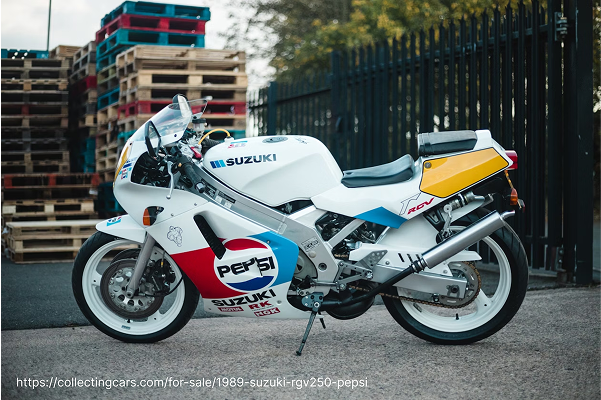

Yamaha FZR400RR – Precision and Performance
A true track-inspired sportbike, the Yamaha FZR400RR featured an aluminum frame, high-revving engine, and sharp handling, making it a legendary machine in the 400cc class.

A true track-inspired sportbike, the Yamaha FZR400RR featured an aluminum frame, high-revving engine, and sharp handling, making it a legendary machine in the 400cc class.